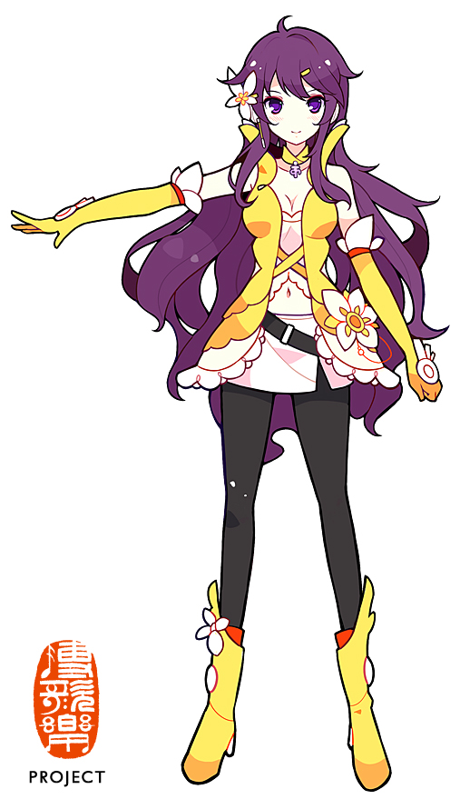

“蘸以清墨，书我弦歌。”
17 岁的高中生，学院里的超人气大姐姐，乐正绫和徵羽摩柯的前辈。紫发紫瞳，外表是带着神秘感的冷美人，实际上因为轻微低血压，反应总是慢半拍。喜欢古书和诗，擅长中国传统乐器，在乐队里弹低音贝斯。声音成熟而浑厚，是 Vsinger 里最稳的那一道底色。

#FFFF00墨清弦有着紫色的长发和紫色的瞳孔，初代形象由 ideolo 设计，V4 形象由 TID 绘制，ACE AI 形象则来自征集活动选出的“歆弦”（画师阿噜）。她是 17 岁的高中生，乐正绫和徵羽摩柯的高中前辈，学院里的超人气大姐姐。
她总是带着稳重感的冷美人，散发出神秘感和让人不容易靠近的气氛——只是外表如此。实际上因为体质关系，平常大部分时间处于轻微的低血压状态，因此反应往往会慢半拍。穿着时尚，但举手投足却显露出古典美的素养。喜欢古书和诗，对中国传统乐器也很擅长。
虽然平常反应有点慢，但是很关心自己的后辈和身边的人，只是偶尔会冒出惊人的哲学理论。声源由网络歌手冥月提供，声线成熟、浑厚，带有自然的鼻音，齿音自然，在低音区尤其稳。这种“稳”让她在合唱中常常成为托底的那一层，也让她的独唱作品自带一种沉静的分量。
墨清弦的官方试听 Demo 曲，2017 年 6 月 17 日在 Vsinger 全息演唱会上首次公开，2019 年 5 月 20 日投稿 MMD PV 版至 B 站。这是她声音第一次被大众听见的方式，也已进入殿堂。
2018 年 12 月 29 日投稿，“αrtist5”系列第二作。墨清弦第一首独唱殿堂曲，截至 2025 年已有超过 82 万次观看。冷冽而克制的旋律，刚好接住了她声音里那种“慢半拍”的疏离感。
2018 年 8 月 3 日投稿，墨清弦与乐正龙牙的合唱作品，殿堂曲。在墨清弦声库正式发布后不久，这首合唱让她的低音贝斯式声线第一次和另一位歌手产生了清晰的化学反应。
2024 年 5 月 20 日由墨清弦官方账号投稿，ACE 中文原创歌曲，收录于官方生贺 EP《一曲清歌醉心弦》。使用了当时尚未正式上线的墨清弦 ACE AI 声库，是她声音进入新阶段的一次重要亮相。
2019 年 10 月 1 日由共青团中央投稿，Vsinger 全员（洛天依、言和、乐正龙牙、乐正绫、徵羽摩柯、墨清弦）演唱，中华人民共和国成立七十周年献礼曲，VOCALOID 中文传说曲。
2022 年 5 月 20 日由墨清弦官方账号投稿，收录于官方 EP《Side B》。闹闹作曲，雨狸作词，城市夜色与白噪音的意象被她沉稳的声线托得很轻，是墨清弦 V4 时期最具代表性的独唱殿堂曲之一。
在“Vsinger Live 洛天依 2017 全息演唱会”上表演《ACE》，声音首次向大众公布。
V4 声库正式发布，基于 VOCALOID 4 引擎，单音色“Original”，擅长音域 F2–D4，擅长节奏 60–170 BPM。
Vsinger 官方宣布墨清弦 ACE AI 声库进入制作阶段。同年 10 月向 ACE Studio 正式会员免费开放。
ACE AI 声库正式版上线，形象由征集活动选出的“歆弦”（阿噜设计）担任。
以《ACE》首次公开发声，作为 Vsinger 成员登场。
参与 Bilibili Macro Link 及 Vsinger Live 全息演唱会，与 Vsinger 全员同台。
线上演唱会中的猫女造型和优雅的舞台演出，让墨清弦收获了不少新的关注。
《绝对占有》等 ACE AI 作品陆续发布，墨清弦的声音在新的引擎下继续生长。
#FFFF00 是墨清弦的代表色，明亮、纯粹，却不像红色那样灼人。它对应的是她紫发紫瞳之间那一抹干净的黄，也对应她外表冷、内里慢半拍的温度。
在 Vsinger 的色谱里，清弦黄是最“亮”的那一道，但墨清弦本人反而是最沉的那个。这种反差恰好就是她的声音：颜色是亮的，声线是稳的；看起来不容易靠近，实际上一直在托着身边的人。